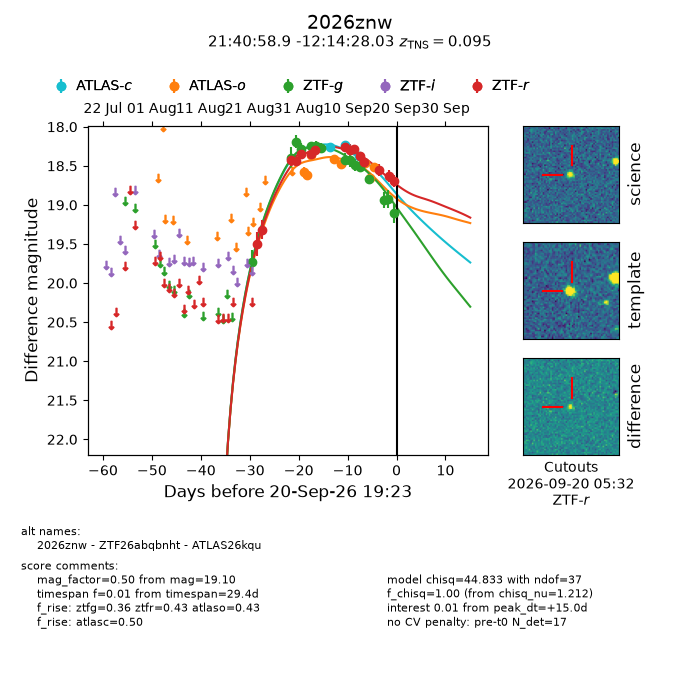
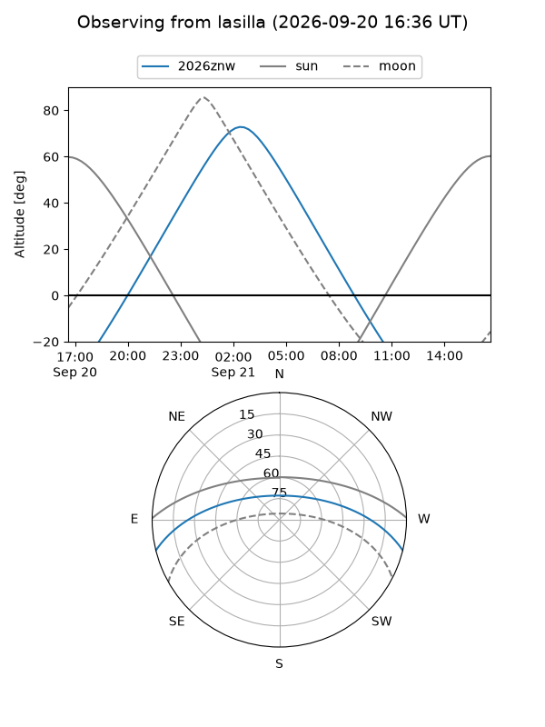
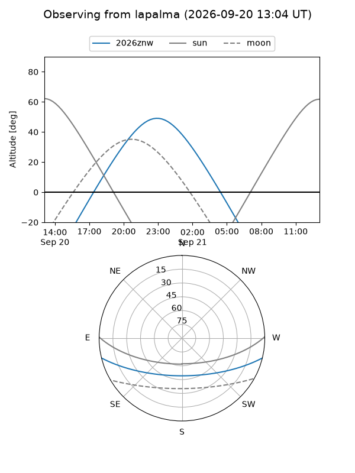
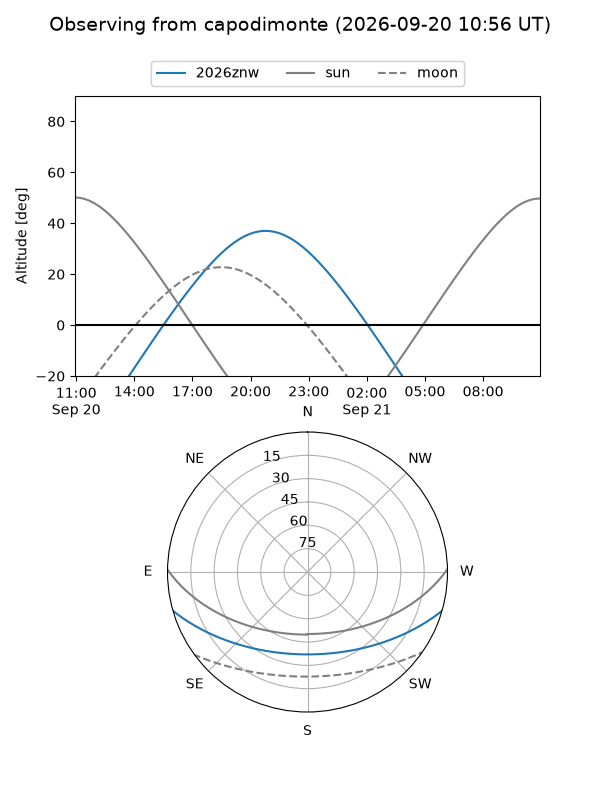
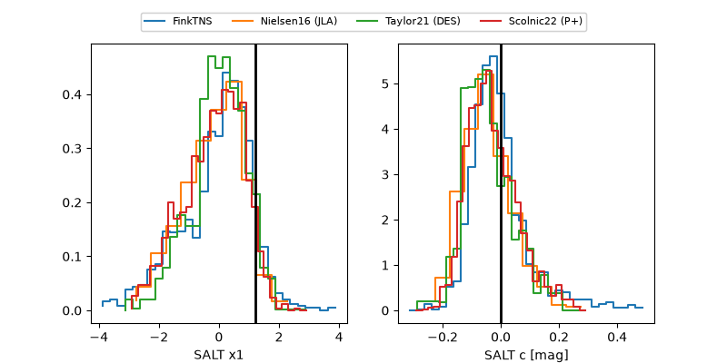

2026znw
Target 2026znw at 2026-09-20 19:25
Aliases and brokers:
FINK-ZTF: ztf.fink-portal.org/ZTF26abqbnht
Lasair-ZTF: lasair-ztf.lsst.ac.uk/objects/ZTF26abqbnht
ALeRCE-ZTF: alerce.online/object/ZTF26abqbnht
YSE-PZ: ziggy.ucolick.org/yse/transient_detail/2026znw
TNS name: wis-tns.org/object/2026znw
Direct TNS query: direct search
alt names
ZTF26abqbnht (ztf,fink_ztf)
2026znw (tns,yse)
ATLAS26kqu (atlas)
Coordinates:
equatorial (ra, dec) = 325.2454,-12.24112
equatorial (HMS+DMS) = 21:40:58.90,-12:14:28.03
galactic (l, b) = (41.7283,-43.07848)
Flags:
TNS type: SN Ia
TNS redshift: 0.0950
peak dt: +15.0
Photometry:
last atlasc=18.37, atlaso=18.51, ztfg=19.10, ztfr=18.69
3 atlasc, 8 atlaso, 15 ztfg, 15 ztfr detections
Lightcurve

Visibility



Additional plots
